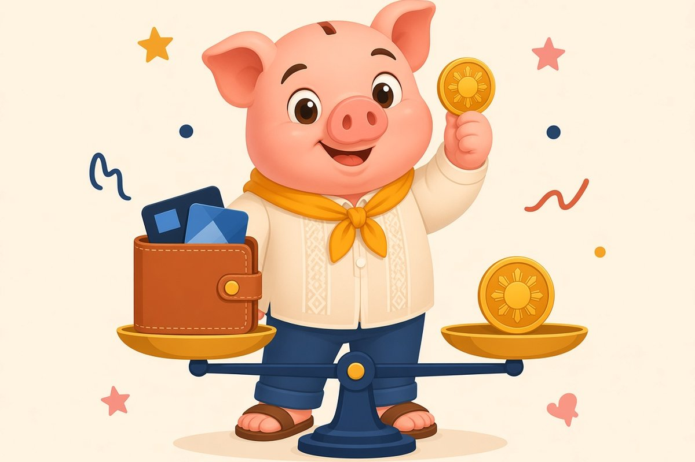
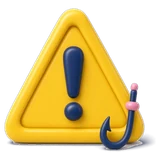

Signed up for the freebie
Kumuha ng card dahil sa libreng luggage. Ngayon may annual fee na.
Credit cards, free lesson
Isa? Tatlo? Lima dahil may freebie? Usapang wais tayo.
The right number is the number you can track and pay in full. For many people that is one or two. Here is how to decide, without anyone selling you a card.
Piso Wais, published

Sound familiar?
Kumuha ng card dahil sa libreng luggage. Ngayon may annual fee na.
Iba-iba ang due date, kaya may nakakalimutan.
Ginagamit ang isang card pambayad sa isa pa.
Malaki ang total limit, kaya parang may pera ka kahit wala.
Lesson 1 Free
List what you actually need a card for: online purchases, a backup for emergencies, a separate card for business expenses, travel. Each card should have one job. If you cannot name the job, you do not need the card.
Lesson 2 Free
 The one-card setup
The one-card setupFor most first-time cardholders, one card is enough. Use it for planned spending you already budgeted, and pay the full statement balance every due date. That builds history without stress.
Example Joy, a teacher in Batangas, uses one card for groceries and bills she already pays monthly. She pays the full statement on payday. One due date, one app, no surprises.
Lesson 3 Free
 When two cards make sense
When two cards make senseA second card can help if you run a small business and want business expenses separate, or as a backup in case one card is blocked or lost. Keep it in a different wallet or app.
Lesson 4 Free
 The hidden cost of more cards
The hidden cost of more cardsMore cards means more annual fees, more due dates, more apps to secure and more chances to miss a payment. A missed payment can mean interest and late fees. For how card interest and the float work, see our guide on using a credit card for business.
Lesson 5 Free
 A simple self-check
A simple self-checkYou are ready for another card only if: you paid every current card in full for the last 6 months, you track every card's due date, and you have a specific job for the new one.
Lesson 6 Free
Every card is another thing to protect. Turn on transaction alerts in each bank app. Never share your OTP or card details with callers. If a card is lost, call the bank's official hotline right away. Fewer cards means fewer things to watch.
Lesson 7 Free

If you already have too manyList each card with its annual fee, balance and due date. Pay down balances first. Then keep the one or two that fit your actual jobs, and call the bank about closing the rest in writing.
Example only. Rico in Makati has four cards. Two have balances, two are unused with annual fees. He pays down the balances over six months, then keeps one for personal use and one for his small printing business.
Quick quiz, 3 minutes
One question per screen, no sign-up, answers stay on your phone.
Take the quizYour next step
Credit card rules, idle money ladder, 30-day cash flow plan.
Get the free cheat sheetPlanned worksheets and templates. Not available yet, nothing to buy.
A guided check of where your money leaks. Coming later.
Rules vary by lender. Pay off the balance first, ask the bank for written confirmation of closure, and keep it.
Not always, but fees should be weighed against what you actually use. Read the bank's current fee table.
Only if you can pay in full monthly. Paying any loan on time also builds a record.
Educational only, not financial advice. Rates and rules change, check the official source.